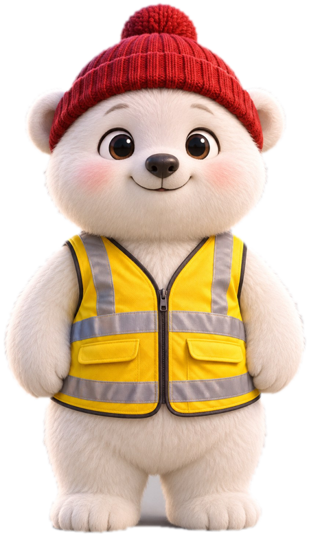
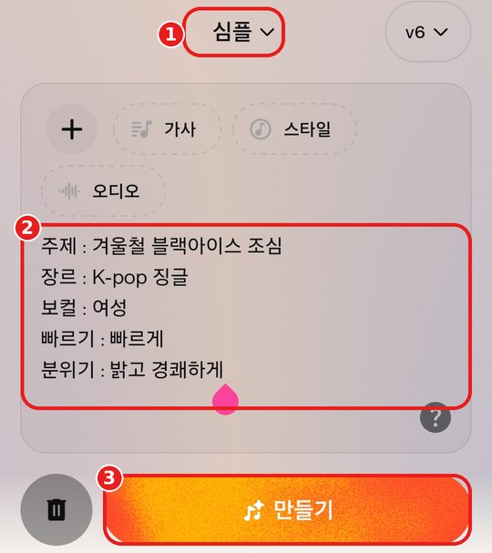
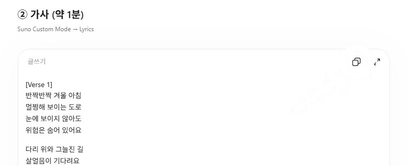
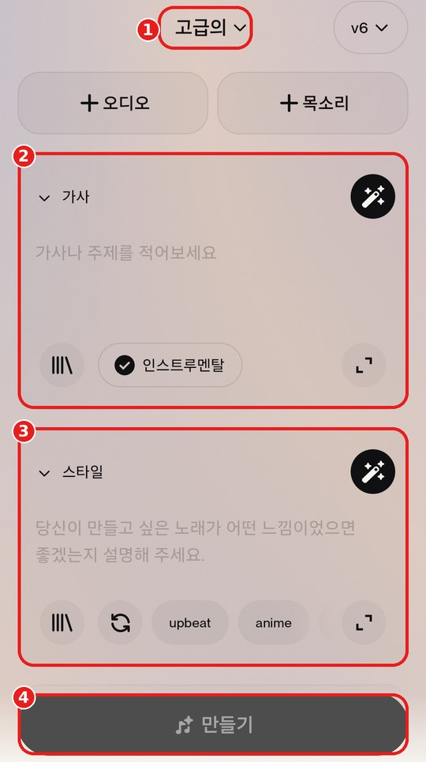
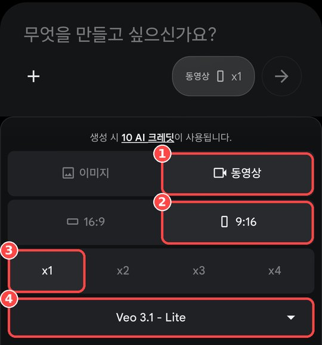

AI 홍보 TF 미션 키트
오늘 쓸 파일 · 복사 문구 · 사진이 수업 순서대로 있습니다. 글은 [복사하기], 파일은 [받기]만 누르세요.

오늘의 강의 흐름
주황 칸이 미션 4개입니다. 칸을 누르면 그 단계로 이동합니다.
이해 — 지도 먼저 보기
강사 설명을 들으며 보는 곳입니다. 따라 할 것은 없습니다.
콘텐츠 4대 분류 교안 9p
생성형 AI 4대 분류 교안 10p
생성의 7단계 교안 11p
- 1말로그냥 말로
- 2샘플샘플 주고
- 3메타프롬프팅AI가 대필
- 4MD규칙 파일 첨부
- 5봇 · 스킬반복 고정
- 6자동화앱끼리 연결
- 7바이브 코딩프로그램 제작
1~4오늘 직접 · 5~7강사 시연
채팅형 AI 5종 교안 14p
| AI | 잘하는 것 | 아쉬운 점 |
|---|---|---|
| 챗지피티 | 대화 · 글 · 이미지, 기능이 가장 많음 | 처음엔 복잡 |
| 클로드 | 긴 글, 규칙 지키기, 파일 · 웹페이지 | 무료 사용량 적음 |
| 제미나이 | 이미지, 구글 서비스 연동 | 답이 짧을 때 있음 |
| 그록 | X(트위터) 실시간 소식 | 공공 업무엔 톤 주의 |
| 퍼플렉시티 | 출처가 붙는 검색 | 긴 글은 약함 |
준비 — 로그인 · 복사 · 첨부
앱 5개 모두 “구글로 계속”으로 로그인합니다.
앱 5개 로그인 교안 23p
앱이 없으면 줄을 눌러 [설치] → 설치 후 “구글로 계속”


복사 · 붙여넣기 연습 교안 26p
[복사하기] → ||| 로 클로드 열기 → 입력 칸 길게 누르기 → 붙여넣기
안녕하세요. 오늘 하루 겨울철 도로 안전 캠페인 AI 홍보 TF에 합류했습니다.
첨부는 이렇게 교안 25p
포스터 샘플, 천천이 캐릭터 시트
받은 파일 (다운로드 폴더)
결과 공유 교안 34p
결과 화면 공유(↗) → 카카오톡 → 오늘의 단톡방
앱 : 클로드 · 한 채팅 안에서 이어서 진행
A. 말로 시키기 교안 31p
클로드 새 채팅에 붙여넣고 보내기
이번 겨울에 블랙아이스 때문에 사고가 많다고 해서 우리 과에서 캠페인을 하라는데 다리 위나 터널 쪽이 특히 위험하고 운전자들이 속도를 좀 줄였으면 좋겠고 보고서로 좀 써줘
B. 같은 채팅에 MD 하나 넣고 다시 교안 32p
새 채팅 열지 말고 그대로 → 붙여넣고 보내기 → 새 보고서 + PDF + HTML이 한 번에 나옴 → 위의 A와 비교
[복사하기] 한 번이면 문장 + MD 4개 합본(팩트 · 보고서 뇌 · PDF 디자인 · HTML 모션)이 통째로 복사됩니다 (파일 첨부 필요 없음)
이번엔 다음 MD 기준으로 다시 보고서 해봐. # 국토부 AI 홍보 TF — 오늘 자료 전체 (MD 4개 합본) > ① 팩트 시트 · ② 보고서 뇌 · ③ PDF 디자인 · ④ HTML 모션 ## 0. 이 MD를 받으면 할 일 (묻지 말고 순서대로 전부) 1. **보고서** : ① 팩트 시트만 근거로, ② 보고서 뇌 규칙대로 기획 보고서를 채팅에 쓴다. 2. **결재용 PDF** : 1번 보고서를 ③ PDF 디자인 규칙대로 꾸며 **다운로드할 수 있는 PDF 파일**로 만든다. 3. **캠페인 웹페이지** : 같은 내용을 ④ HTML 모션 규칙대로 **움직이는 HTML 파일 한 개**로 만든다. 4. 마지막에 PDF · HTML 파일을 받을 수 있게 보여 주고, 한 줄로 "보고서 · PDF · HTML 완성"이라고 알린다. --- <!-- ===== 1. 팩트 시트 (molit_01_factsheet.md) ===== --> # [교육용 가상 자료] 겨울철 도로 안전 캠페인 팩트 시트 > 생성형 AI 실습용 **가상 자료**입니다. 실제 정책·통계가 아닙니다. ## 0. 바꾸는 칸 (기본값, 채팅에서 바꿔도 됨) - 내 이름: 홍길동 - 내 부서명: 도로안전과 - 마스코트 이름: 천천이 (아기 백곰) ## 1. TF 개요 - TF명: 겨울철 도로 안전 캠페인 AI 홍보 TF - 미션: 시민에게 겨울철 안전운전 수칙을 쉽고 친근하게 알리기 - 기간: 12월 1일 ~ 2월 28일 (가상) - 산출물: 기획 보고서, 홍보 포스터, 캠페인송, 영상 클립 3 ## 2. 캠페인 배경 - 겨울철에는 눈, 결빙, 짧은 일조시간으로 운전 환경이 나빠짐 - 특히 **블랙아이스**(도로 위 얇은 투명 얼음)는 눈에 잘 보이지 않아 위험 - 다리 위, 터널 출입구, 그늘진 도로, 새벽·밤 시간대에 자주 생김 - 많은 운전자가 "눈이 안 오면 괜찮다"고 생각하는 것이 문제 ## 3. 핵심 메시지 "보이지 않는 얼음, 속도를 줄이면 보입니다." ## 4. 겨울철 안전운전 5대 수칙 1. **감속 운전**: 평소보다 속도를 충분히 줄이기 2. **차간거리 넉넉히**: 앞차와 거리를 평소보다 길게 3. **급제동·급핸들 금지**: 부드럽게 밟고, 천천히 돌리기 4. **출발 전 점검**: 타이어, 와이퍼, 워셔액, 배터리 확인 5. **위험 구간 주의**: 다리 위, 터널 입구, 그늘진 도로에서 특히 조심 ## 5. 타깃 - 1순위: 출퇴근 운전자 (30~50대) - 2순위: 장거리 귀성·여행 운전자 - 3순위: 초보 운전자 ## 6. 홍보 채널 (가상) - 기관 SNS(인스타그램 릴스, 유튜브 쇼츠) - 고속도로 휴게소 포스터 - 지자체 전광판 ## 7. 마스코트 - 아기 백곰, 노란 안전조끼와 빨간 털모자 착용 - 성격: 밝고 침착함, "천천히 가도 괜찮아"가 입버릇 - 역할: 운전자 옆에서 수칙을 알려주는 안전 요원 ## 8. 슬로건 후보 - "천천히 가도, 같이 도착해요" - "겨울 도로, 한 박자 늦게" - "블랙아이스, 속도가 답입니다" ## 9. 기대 효과 (정성적, 가상) - 블랙아이스 위험에 대한 시민 인식 향상 - 겨울철 감속 운전 습관 확산 - 기관 SNS 친근한 이미지 강화 ## 10. 영상용 3신 줄거리 - 신1: 새벽 다리 위, 반짝이는 도로를 보고 멈칫하는 백곰 - 신2: 차 옆에서 "천천히!" 손짓하며 감속을 알리는 백곰 - 신3: 안전하게 도착한 차 앞에서 엄지척하는 백곰 + 슬로건 --- <!-- ===== 2. 보고서 뇌 (molit_02_report_brain.md) ===== --> # 보고서 뇌 (molit_02_report_brain.md) > AI에게 주는 "결재가 바로 나는 보고서" 작성 규칙입니다. 고치지 말고 그대로 붙여넣으세요. ## 1. 너의 역할 - 너는 20년 경력의 중앙부처 기획담당 사무관이고, 국장 결재를 한 번에 받는 보고서로 유명하다. - 읽는 사람은 바쁜 국장님이다. 첫 5줄만 읽고도 무엇을, 왜, 언제까지 하는지 알아야 한다. - 함께 붙여넣은 "팩트 시트"만 근거로 쓴다. 질문하지 말고 바로 완성본을 쓴다. ## 2. 절대 규칙 - 팩트 시트에 없는 숫자 · 통계 · 예산 · 날짜는 절대 만들지 않는다. 필요하면 "(추후 확정)"으로 쓴다. - 주장마다 근거 꼬리표를 단다. 예: "다리 위 · 터널 입구가 가장 위험함 (팩트 2항)" - 팩트 시트 "바꾸는 칸"의 이름 · 부서명 · 마스코트 이름을 그대로 쓴다. - 맨 위에 "※ 교육용 가상 자료" 한 줄을 넣는다. ## 3. 보고서 잘 쓰는 7원칙 (반드시 지킬 것) 1. 두괄식 : 결론과 요청 사항이 맨 위. 배경 설명은 그 다음. 2. 한 줄 한 메시지 : 한 줄에 내용은 하나만. 한 줄은 40자 이내. 3. 3의 법칙 : 핵심은 3개로 묶는다 (요약 3줄, 전략 3개, 기대 효과 3개). 4. So What : 모든 항목 끝에 "그래서 무엇을 한다"가 보여야 한다. 5. 표로 보여 주기 : 비교 · 대상별 · 일정은 반드시 표로 만든다. 6. 두 가지 말 : 보고서 본문은 공문서 말투, 시민에게 보여 줄 문구는 따옴표 안에 쉬운 말. 7. 위험까지 먼저 : 예상되는 문제와 대응을 먼저 적어 질문을 막는다. ## 4. 문체 - 공문서 개조식 : □(대제목) → ○(중제목) → -(세부) - 문장 끝은 "~함", "~임", "~예정", "~필요"로 끝낸다. - 이모지 쓰지 않는다. 어려운 한자어 대신 쉬운 말. ## 5. 보고서 구성 (이 순서 그대로) 1. 제목 : 「겨울철 도로 안전 캠페인 AI 홍보 추진계획(안)」 + 보고자(부서명 / 이름 / 오늘 날짜) 2. [핵심 요약] 박스 3줄 : ① 무엇을 ② 왜 지금 ③ 결정 요청 사항 3. □ 추진 배경 : 문제 3가지 (보이지 않는 얼음 / 위험 구간 · 시간대 / 운전자의 잘못된 믿음) 4. □ 추진 방향 : 핵심 메시지 한 줄 + 전략 3개 (알기 쉽게 · 친근하게 · 현장에서) 5. □ 대상별 홍보 전략 표 : 대상 | 위험 상황 | 전할 메시지(쉬운 말) | 채널 — 대상 3개 모두 6. □ 안전운전 5대 수칙 표 : 번호 | 수칙 | 시민용 한 줄 문구(따옴표) 7. □ 홍보 콘텐츠 기획 표 : 콘텐츠 | 내용 | 마스코트 활용 — 포스터 · 캠페인송 · 영상 3신 8. □ 추진 일정 표 : 12월 · 1월 · 2월에 할 일 (날짜가 없으면 월 단위로만) 9. □ 기대 효과 3개 + 확인할 지표 이름 (목표 수치는 "(추후 확정)") 10. □ 예상 문제와 대응 표 : 문제 | 대응 — 2~3개 11. □ 협조 요청 사항 : 누구에게 무엇을 — 2줄 12. 붙임 : 슬로건 후보 3개 비교표 (슬로건 | 장점 | 추천 여부) + "※ 추천 슬로건 :" 한 줄과 이유 ## 6. 분량과 마무리 - A4 2쪽 이내. 표는 4개 이상. - 다 쓴 뒤 속으로 점검한다 (출력하지 않음) : 두괄식인가 / 없는 숫자가 없나 / 모든 주장에 근거 꼬리표가 있나 / 표가 4개 이상인가. --- <!-- ===== 3. PDF 디자인 (molit_03_pdf_design.md) ===== --> # PDF 디자인 (molit_03_pdf_design.md) > 보고서를 "인쇄해서 결재 올리는 문서"로 꾸미는 규칙입니다. 고치지 말고 그대로 붙여넣으세요. ## 1. 목표 - 앞에서 쓴 보고서 내용을 그대로 두고, 디자인만 입혀 PDF 파일 1개로 만든다. - 질문하지 말고 바로 PDF 파일을 만든다. ## 2. 판형 - A4 세로, 1~2쪽, 여백 넉넉히(상하좌우 18mm) - 움직임 없음. 인쇄해도 깔끔해야 한다. ## 3. 색 - 메인: 딥네이비 #1F2A44 - 포인트: 안전 옐로 #FFC629 (전체의 10% 이하, 강조에만) - 바탕: 흰색, 표 머리글만 연한 회색 #F2F4F7 ## 4. 글꼴 - 한글 글꼴을 반드시 파일에 넣는다(Noto Sans KR 또는 나눔고딕). 한글이 네모로 깨지면 안 된다. - 제목 20pt 굵게, □ 대제목 13pt 굵게, 본문 10.5pt ## 5. 구성 1. 맨 위 가로 띠(네이비): 왼쪽 "겨울철 도로 안전 캠페인 AI 홍보 TF", 오른쪽 부서명 2. 띠 아래 옐로 얇은 선 1줄 3. 제목 + 보고자·작성일 한 줄 4. □ 대제목 앞에 네이비 작은 사각형 5. 5대 수칙은 표(번호 | 수칙 | 쉬운 설명), 번호 칸은 옐로 원 6. 핵심 메시지는 옐로 테두리 박스로 한 번만 강조 7. 맨 아래: "※ 교육용 가상 자료" + 쪽 번호 ## 6. 금지 - 그림·이모지·그라데이션·움직임 - 보고서에 없는 내용 추가 --- <!-- ===== 4. HTML 모션 (molit_04_html_motion.md) ===== --> # HTML 모션 디자인 (molit_04_html_motion.md) > 보고서를 "태블릿에서 만져 보는 캠페인 웹페이지"로 바꾸는 규칙입니다. 고치지 말고 그대로 붙여넣으세요. ## 1. 목표 - 앞에서 쓴 보고서 내용으로 움직이는 HTML 페이지 1개를 만든다. - 질문하지 말고 바로 만든다. 파일 하나에 모두 담는다(외부 라이브러리 없이). - 태블릿 세로 화면 기준, 손가락으로 누르기 쉽게(버튼 최소 48px). ## 2. 분위기 - 겨울 밤 도로: 배경 딥네이비 #0F1B33 → 아래로 갈수록 #1F2A44 - 포인트: 안전 옐로 #FFC629, 얼음 하늘색 #9FD8FF - 글꼴: Noto Sans KR(없으면 기본 고딕), 제목은 아주 크게 ## 3. 반드시 넣을 모션 (전부) 1. 눈 내리는 배경: 작은 흰 점들이 천천히 계속 떨어진다 2. 옆에서 등장하는 제목: 각 섹션 제목이 화면에 들어올 때 왼쪽에서 미끄러져 들어온다 3. 타이핑 효과 본문: 맨 위 핵심 메시지가 한 글자씩 타이핑되고 커서가 깜빡인다 4. 누르면 내려오는 메뉴: 5대 수칙은 아코디언. 수칙 제목을 누르면 설명이 부드럽게 내려오고, 다시 누르면 접힌다 5. 아래에서 떠오르는 카드: 타깃·채널·기대효과 카드가 스크롤하면 하나씩 떠오른다 6. 반짝이는 슬로건: 맨 아래 추천 슬로건이 옐로로 천천히 빛났다 꺼졌다 한다 7. 얼음 반짝임: "블랙아이스" 글자에 하늘색 빛이 스치고 지나간다 8. 상단 진행 바: 스크롤한 만큼 옐로 바가 차오른다 9. 맨 위로 버튼: 오른쪽 아래 둥근 버튼, 누르면 부드럽게 맨 위로 ## 4. 화면 순서 1. 첫 화면: 큰 제목 + 타이핑 핵심 메시지 + "아래로" 화살표(통통 튐) 2. 추진 배경 3. 5대 수칙(아코디언) 4. 홍보 방법 카드(타깃·채널·마스코트) 5. 일정·기대효과 카드 6. 마무리: 반짝이는 슬로건 + 부서명·이름 + "※ 교육용 가상 자료" ## 5. 금지 - 보고서에 없는 숫자·통계 추가 - 너무 빠른 깜빡임(1초에 3번 이상) - 글자가 배경에 묻히는 색 조합
말로 vs MD 비교 교안 33p
형식 · 숫자 · 부서명 · 결과물(글 1개 vs 글 + PDF + HTML) 확인
단톡방 공유 교안 34p
A · B 보고서 캡처 + PDF + HTML 화면 — 가장 달랐던 점 한 줄
앱 : 챗지피티 · 한 채팅 안에서 이어서 진행
A. 말로 시키기 교안 37p
챗지피티 새 채팅에 붙여넣고 보내기
겨울철 블랙아이스 조심 포스터를 만들어줘. 대국민 대상, 세로 방향, 예쁘게


B. 같은 채팅에 샘플 넣고 다시 교안 39p
같은 채팅 → ＋ → 사진 → 받은 샘플 → 붙여넣고 보내기 → 위아래 비교
이번엔 이 이미지를 참고해서 위 포스터를 다시 만들어줘. 주로 그림체만 따라하고, 샘플 이미지의 내용은 따라하지 마.


단톡방 공유 교안 41p
앱 : 수노 · 제미나이 (+ 챗지피티)
A. 키워드 5개만 넣고 뽑기 교안 44p
수노 : 만들기 → 심플 모드 → 붙여넣기 → 생성 · 제미나이 : 도구 → 음악 → 붙여넣기 → 보내기
주제 : 겨울철 블랙아이스 조심 장르 : K-pop 징글 보컬 : 여성 빠르기 : 빠르게 분위기 : 밝고 경쾌하게

키워드 5개 중 장르 · 분위기 · 빠르기를 하나씩 골라 바꿔 보세요 (한글로 써도 됩니다)
B. 내 상황에 딱 맞게 — 프롬프트 받아오기 교안 46p 챗지피티 들어가기 ›
챗지피티 들어가기 ›
포스터 만든 챗지피티 채팅에 이어서 붙여넣기 (새 창이면 포스터 사진 첨부) → 제목 · 가사 · 스타일 받기
위 포스터와 같은 상황에 쓸 대국민 캠페인송을 만들려고 해. 수노(커스텀 모드)에 그대로 붙여넣을 수 있게 아래 3가지로 나눠서 써줘. ① 제목 ② 가사 : 한국어, [Verse] [Chorus] 구분, 1분 분량, 포스터의 핵심 문구가 후렴에 들어가게 ③ 스타일 : 영어, 장르 · 보컬 · 빠르기 · 악기 · 분위기를 200자 이내로
챗지피티 답변 복사하기
챗지피티가 써 준 ② 가사 상자 오른쪽 위의 복사 아이콘 ⧉ 을 눌러 복사 → 수노에 붙여넣기
① 제목 · ③ 스타일 상자도 각각 똑같이 복사합니다

받아온 그대로 다시 뽑기 교안 47p
수노 : 새 창 → 고급 모드 → 제목 · 가사 · 스타일 칸에 받아온 내용 붙여넣기
제미나이 : 새 채팅 → 음악 → 받아온 가사 + 스타일 함께 붙여넣기

1곡 공유 교안 49p
받아온 프롬프트로 만든 곡 1곡 → 수노 : 곡 옆 Share → Copy link → ||| 카카오톡 → 단톡방에 꾹 붙여넣기 (교안 50p)
제미나이 : 공유(↗) → 링크 복사
“천천이가 직접 말하는 블랙아이스 조심 홍보 영상, 3장면으로 만들어 주세요.” 교안 53p
앱 : 구글 플로우 (모델 Veo 3.1 Lite) · 모두 같은 재료로 똑같이 만듭니다

3장면 구성 (대사까지 정해져 있어요) 교안 55p
플로우 준비 교안 56p
플로우 → 새 프로젝트 → 입력창 오른쪽 [동영상 ▯ x1] 칩을 눌러 설정 · 장면마다 캐릭터 시트를 다시 첨부합니다

장면 하나씩 만들기 교안 57p
신마다 반복 : [복사하기] → 플로우 ＋ → 시트 첨부 → 입력 칸에 붙여넣기 → 생성. 신1 → 신2 → 신3 순서로
Use the attached character sheet as the reference. Keep the character exactly the same as the sheet. Make one 8-second vertical 9:16 video clip with Veo 3.1 Lite, 3D claymation stop-motion style. The character speaks the Korean line himself in a bright, friendly, child-like voice at a calm pace with natural lip sync. Timing: in the first 2 seconds he does not speak (silent action only); he speaks in the middle of the clip, starting at about the 2-second mark and finishing by about the 6-second mark; the last 2 seconds are a silent reaction. No subtitles, no on-screen text. Scene: Cheoncheoni, a chubby cute baby polar bear mascot in 3D claymation style (handmade plasticine clay look, soft fingerprint texture), snow-white clay fur, bright yellow safety vest with silver reflective stripes, red knitted beanie with a pom-pom, big shiny dark eyes, rosy cheeks. He stands on the snowy sidewalk of a bridge at dawn. The road surface looks wet and glistens under blue morning light, but it is a thin invisible sheet of black ice. He points a paw at the shiny road, his eyes widen in surprise, then he turns to the camera and says in Korean: "앗, 반짝이는 저 길! 블랙아이스일 수 있어요." Slow camera push-in, cold blue dawn light, soft wind and a distant car sound.
Use the attached character sheet as the reference. Keep the character exactly the same as the sheet. Make one 8-second vertical 9:16 video clip with Veo 3.1 Lite, 3D claymation stop-motion style. The character speaks the Korean line himself in a bright, friendly, child-like voice at a calm pace with natural lip sync. Timing: in the first 2 seconds he does not speak (silent action only); he speaks in the middle of the clip, starting at about the 2-second mark and finishing by about the 6-second mark; the last 2 seconds are a silent reaction. No subtitles, no on-screen text. Scene: Cheoncheoni, a chubby cute baby polar bear mascot in 3D claymation style (handmade plasticine clay look, soft fingerprint texture), snow-white clay fur, bright yellow safety vest with silver reflective stripes, red knitted beanie with a pom-pom, big shiny dark eyes, rosy cheeks. He stands at the roadside in front of a tunnel entrance on a snowy winter road. A small car approaches. He raises one paw like a calm traffic guide and the car gently slows down. He looks at the camera and says in Korean: "다리 위, 터널 앞에선 속도를 줄이세요!" Steady medium shot, overcast winter light, sound of tires slowly rolling on snow.
Use the attached character sheet as the reference. Keep the character exactly the same as the sheet. Make one 8-second vertical 9:16 video clip with Veo 3.1 Lite, 3D claymation stop-motion style. The character speaks the Korean line himself in a bright, friendly, child-like voice at a calm pace with natural lip sync. Timing: in the first 2 seconds he does not speak (silent action only); he speaks in the middle of the clip, starting at about the 2-second mark and finishing by about the 6-second mark; the last 2 seconds are a silent reaction. No subtitles, no on-screen text. Scene: Cheoncheoni, a chubby cute baby polar bear mascot in 3D claymation style (handmade plasticine clay look, soft fingerprint texture), snow-white clay fur, bright yellow safety vest with silver reflective stripes, red knitted beanie with a pom-pom, big shiny dark eyes, rosy cheeks. A snowy village at sunrise with warm golden light. A small car is parked safely behind him. He gives a big thumbs-up, smiles proudly and says in Korean: "블랙아이스, 속도가 답입니다. 천천히 가요!" The camera slowly pulls back, light cheerful music.
클립 3개 공유 교안 58p
세로 클립 3개를 단톡방에 + 제일 마음에 드는 장면 한 줄
시연 · 클로드에 다 넣고 편집 시키기 교안 65p
지금까지 만든 영상 3개 + 로고 + 노래를 클로드에 한꺼번에 넣고, 말로 시켜서 한 편으로 완성합니다
속도를 줄이세요!
제목 자막 + 말자막 + 로고 + 노래까지
첨부한 영상 3개(신1 · 신2 · 신3), 국토교통부 로고(배경 없는 PNG), 노래를 FFmpeg로 편집해서 홍보 영상 1편으로 만들어줘. 1. 컷 편집 : 신1 → 신2 → 신3 순서로 이어 붙이고, 말이 나오지 않는 앞뒤 빈 부분은 길게 남지 않게 짧게 잘라 줘 2. 말자막 : 천천이 대사를 화면 중간쯤 높이에 크게 (흰 글씨 + 검은 테두리) 신1 “앗, 반짝이는 저 길! 블랙아이스일 수 있어요.” 신2 “다리 위, 터널 앞에선 속도를 줄이세요!” 신3 “블랙아이스, 속도가 답입니다. 천천히 가요!” 3. 상단 제목 : 영상 내내 위쪽에 「겨울 도로, 천천히」 고정 4. 로고 : 화면 중하단에 작게 5. 음악 : 노래를 배경음악으로 깔되, 대사가 잘 들리게 작게 6. 저장 : 세로 9:16 mp4 한 개
클로드, 챗지피티 모두 가능하지만 무료 버전의 경우 토큰 부족으로 완성되지 않을 수 있습니다.
강사 시연 · 말 한마디로 발표자료와 움직이는 카드뉴스를 만듭니다. 쉬는 시간에 따라 해 보셔도 좋아요. 교안 59~63p
PPT보다 HTML인 이유 10가지 교안 60p
HTML 발표자료 만들기 — 재료 3개 + 말 한 줄 교안 61p
① 원고(앞에서 만든 보고서) + ② 디자인 MD + ③ 참고 샘플(선택) → 클로드에 첨부 후 붙여넣기
앞에서 만든 블랙아이스 예방 캠페인 보고서 내용으로 HTML 발표자료를 만들어줘. - 16:9 (1280×720), 6장 - 키보드 방향키로 넘기기, 하단에 쪽 번호 - 파일 1개 (HTML 안에 CSS · JS 포함) - 디자인은 첨부한 디자인 MD 규칙을 따를 것 - 글이 많은 장은 표 · 흐름도 · 비교 카드로 바꿔줘 - 보고서에 없는 숫자는 넣지 말 것 - 먼저 장별 목차만 보여주고, 내가 OK하면 만들어
목차 먼저 → 컨펌 → 생성 : 한 번에 끝까지 만들지 않습니다
한 장씩 고치고 · 시각화하고 · 내보내기 교안 62p
움직이는 HTML 카드뉴스 교안 63p
비율 4:5 (1080×1350) · 4장 · 장당 3.5초 자동 넘김 · 화면 녹화하면 바로 릴스
주제 : 겨울철 블랙아이스 조심 이 주제로 움직이는 카드뉴스를 HTML 파일 1개로 만들어줘. - 4:5 (1080×1350), 4장, 장당 3.5초 자동 넘김, 마지막 장 후 처음으로 반복 - 1장 후킹 제목 / 2~3장 핵심 내용 / 4장 정리 한 줄 (글은 장마다 2줄 이내, 크게) - 모션 : 제목은 아래에서 등장, 흐름도는 선이 순서대로 그려지게 - 디자인은 첨부한 디자인 MD 규칙을 따를 것 - 먼저 장별 문구만 보여주고, 내가 OK하면 만들어
※ 클로드, 챗지피티 모두 가능하지만 무료 버전의 경우 토큰 부족으로 완성되지 않을 수 있습니다.
디자인 참조 사이트
자료 · 카드뉴스 · 포스터를 만들 때 참고하면 좋은 사이트입니다.
샘플 봇 받기 — 간단 콘텐츠 봇 (국토부)
국토부 로고 · 국토 4인 캐릭터가 들어간 실습용 키트입니다. 노트북에서 폴더 하나만 연결하면 보고서 · 포스터 · 카드뉴스 · 숏폼 · AI PPT(HTML) 봇 5개를 쓸 수 있습니다.
※ 노트북(PC) 전용입니다. 태블릿에서는 받지 않아도 됩니다.
🆘막혔을 때
눌러서 전부 보기
◁ 뒤로 = 방금 화면 · ○ 홈 = 바탕 화면 · ||| = 앱 전환
[복사하기]가 “복사 완료”로 바뀌었는지 확인 → 입력 칸을 1초 길게 누르기 → “붙여넣기”
키보드 한/영 키로 전환, 또는 키보드의 🎤 마이크를 눌러 말로 입력
내 파일 앱 → 다운로드. 첨부할 때도 ＋ → 파일 → 다운로드
[사진 받기] 누른 뒤 갤러리 → Download 앨범 확인
그림은 ＋ → 사진 / 문서(molit_all.md)는 ＋ → 파일
||| → 크롬, 또는 홈 화면의 홈피 바로가기
◁ 뒤로를 누르면 홈피로 돌아옵니다
“구글로 계속” → 개인 폰의 2단계 인증 확인
1분 기다리기 → 새 채팅에서 다시. 사용량이 다 됐다면 단톡방의 강사 결과로 이어 가기
결과 화면 공유(↗) → 카카오톡 → 단톡방. 공유가 없으면 화면 캡처